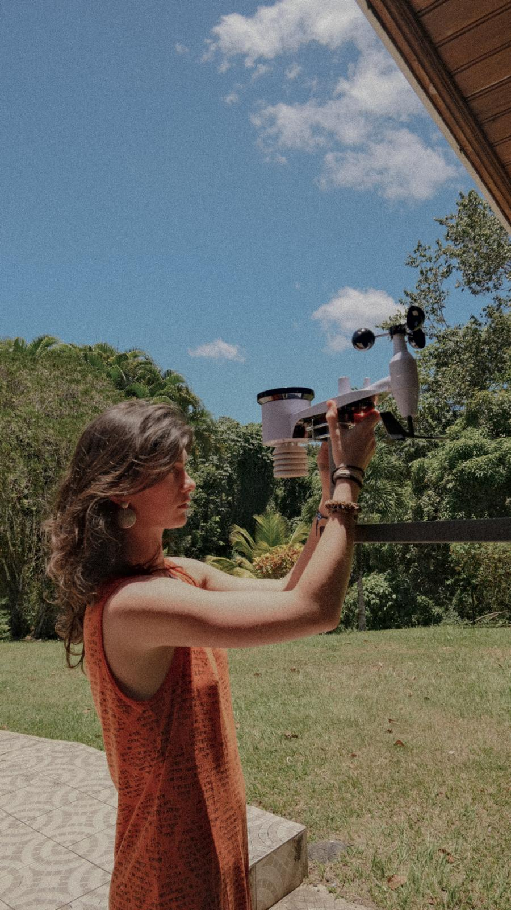
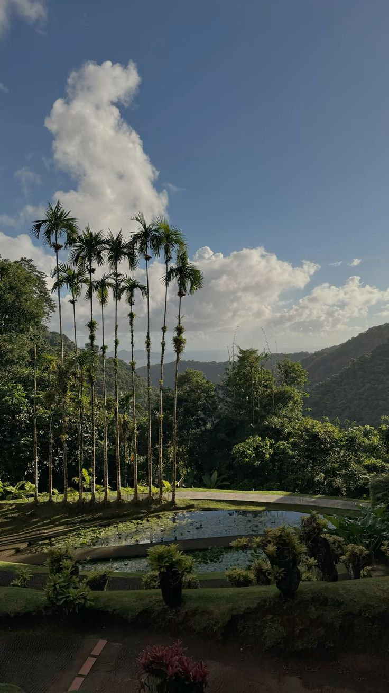
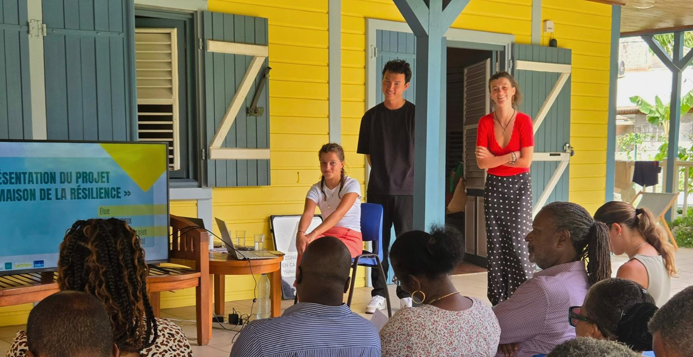
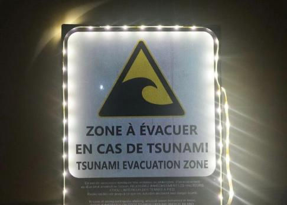

01
Mesurer & Fiabiliser
Installation et comparaison de stations météorologiques, puis développement d’outils Python pour nettoyer, synchroniser et fiabiliser les données collectées.
technologie × resilience territoriale
Pendant quatre mois en Martinique et avec deux camarades de classe nous avons participé au développement de solutions technologiques pour accompagner la Ville du Lamentin dans sa stratégie de résilience territoriale. À partir des besoins exprimés par la collectivité, nous avons travaillé sur la collecte et la fiabilisation de données météorologiques, leur transformation en informations accessibles, ainsi que sur la conception de prototypes adaptés au territoire.
Entre IoT, analyse de données, développement web, électronique et fabrication 3D, ce projet reposait sur une démarche très expérimentale : observer un besoin sur le terrain, proposer une solution, la prototyper, la tester puis l’améliorer. Les contraintes de coût, d’autonomie énergétique, de disponibilité du matériel et de maintenance ont également conduit à privilégier des solutions simples, frugales et reproductibles.


Installation et comparaison de stations météorologiques, puis développement d’outils Python pour nettoyer, synchroniser et fiabiliser les données collectées.

Conception d’un observatoire météorologique web transformant les données brutes en graphiques, indicateurs et bulletins accessibles à la collectivité que nous avons rencontrée lors d'une réunion municipale pour présenter les travaux réalisés durant notre stage.

Développement de solutions autonomes et low-tech : station météo solaire, fabrication 3D et éclairage de signalisation tsunami.